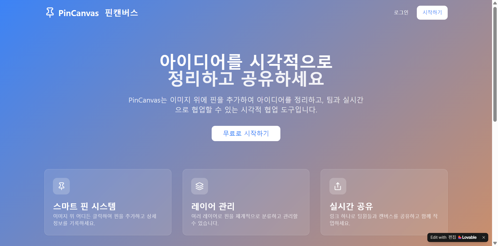

어떤 이미지든
캔버스로
지도, 평면도, 작품 이미지처럼 수업에 필요한 배경을 직접 올려 탐구 공간으로 사용합니다.
WHY IT STARTED
상북중학교의 ‘지역사회와 세계시민’ 교과는 학생들이 지역의 지형·역사·문화와 세계의 문제를 연결해 탐구하는 수업입니다. 한 학기 동안 탐구 결과를 지도 위에 축적하고 함께 편집할 수 있는 도구가 필요했지만, 기존 서비스 하나로는 현장의 요구를 모두 충족하기 어려웠습니다.
그래서 교사들의 요구를 듣고, 실제 수업에서 사용하며 고쳐 나가는 방식으로 PinCanvas를 만들었습니다.

이미지 위에 정보를 쌓고, 하나의 캔버스를 함께 편집하는 시각적 협업 도구.
WHAT IT DOES
01 — 04지도, 평면도, 작품 이미지처럼 수업에 필요한 배경을 직접 올려 탐구 공간으로 사용합니다.
학생들이 원하는 위치에 핀을 놓고 텍스트와 이미지, 링크를 연결해 정보를 축적합니다.
자유 곡선과 선, 도형을 이용해 경계와 이동, 관계를 캔버스 위에 시각화합니다.
하나의 캔버스를 여러 학생이 실시간으로 편집하고 결과를 공유할 수 있습니다.
IN THE CLASSROOM
2025학년도 2학기, 상북중학교 1학년 2개 학급 46명이 8차시에 걸쳐 사용했습니다. 학생들은 지역 지도를 배경으로 탐구 결과를 핀으로 배치하고, 모둠별 내용을 하나의 화면에 계속 쌓아갔습니다.
완성된 앱을 전달하고 끝낸 것이 아니라, PC와 태블릿에서 발생한 좌표 문제와 자동 저장, 사용 흐름을 교사 피드백에 따라 반복해서 개선했습니다.
상북중 수업 이야기 읽기 ↗FROM PRACTICE TO RESEARCH
PinCanvas의 요구 분석, 설계, 수업 적용과 개선 과정을 두 번의 설계기반연구 사이클로 정리했습니다. Lovable, Claude Code, Supabase를 활용한 개발 과정과 교사-개발자 협업에서 도출한 일곱 가지 설계원리를 담았습니다.
A NOTE
많이 쓰이는 서비스를 만드는 것보다, 현장의 필요를 듣고 직접 도구로 답해 본 경험을 기록하기 위해 이 페이지를 남깁니다.